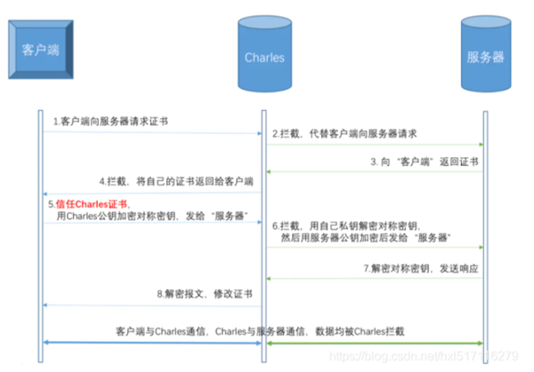
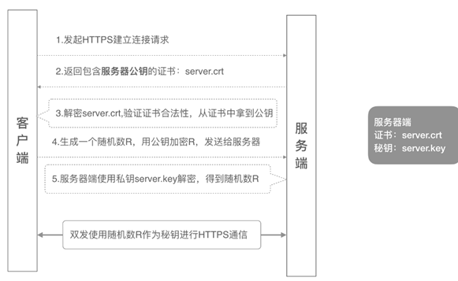
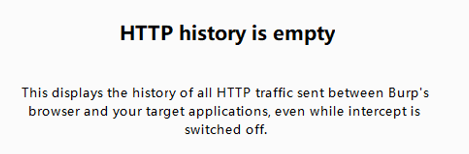
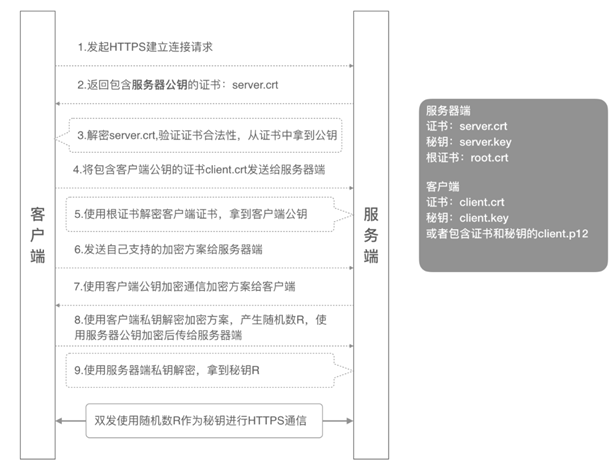
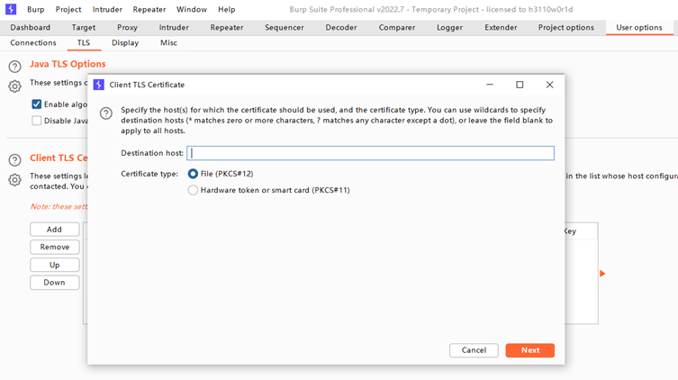

android抓包基础总结
针对常见的抓包方式以及对抗做了一个总结
抓包方式分类
-
网卡抓包
- 肯定能抓到, 但是是未解密的数据, 可能用来抓http比较好使一点
-
Hook数据抓包
- 如果直接hook底层api可以直接省掉逆向分析, 并且帮助逆向分析程序执行逻辑(使用frida等hook工具来打印堆栈回溯等), 但是hook出来的数据进行分析有些麻烦.
-
代理抓包
- 可以直接对https数据包进行解析, 可以很方便的进行查看与修改, 不过这也是反抓包手段的主要目标
-
.…………
代理抓包
原理
代理软件对于客户端app伪造成一个服务器, 对于服务器伪造成一个客户端, 然后再把对应的消息进行转发, 这样可以在正常通信的前提下, 对通信的信息了如指掌.
大概就是这个样子(网上找的图):

对于没有保护的app, 把环境配好就能抓包抓到了, 配合上逆向一倒腾, 许许多多的爬虫就出来了.所以很多app都加了各种各样的校验, 比如服务端验证客户端证书, 客户端验证服务端证书等.

客户端验证服务器证书
这里就用了客户端验证服务器证书, 开发商先讲证书信息内置到app中, 当客户端请求服务器连接并收到服务器证书后, 使用内置的证书信息校验服务器证书是否合法, 如果不合法直接断开连接. 当抓包证书伪装服务器的时候返回的Burp证书肯定是不能通过校验的.
客户端校验服务器失败之后, burp suite一般是没有任何内容的, 客户端直接把连接断掉了

遇到有客户端校验服务器证书的app,可以采取一下几个方案进行绕过:
- 对app进行逆向并且patch掉校验实现的地方然后重打包
- 逆向成本有点高, 对于加固和加密的APK耗时耗精力, 不过有时候不得不这样(针对框架完全是开发商自己实现的情况)
- 使用Frida对应的API进行hook
- 用到了Frida框架, 所以对root有要求, 并且容易被反调试限制. 现成的针对校验 SSL 证书的 API 的frida脚本网上一搜就有现成的, 不过针对http框架完全是开发商自己实现的情况就需要自己来写了.
- Xposed框架+JustTrustMe进行绕过
- JustTrustMe 一个用来禁用、绕过 SSL 证书检查的基于 Xposed 模块。JustTrustMe 也是将 APK 中所有用于校验 SSL 证书的 API 都进行了 Hook，从而绕过证书检查. 不过有动用xposed框架就可能搞成砖块.可以先在模拟器中试试. 一样需要root环境, app可能会有xposed和root检查, 不过这里不会被反调试限制.
- VirtualApp.
- …………………………………………….
服务端验证客户端证书

比起单向认证, 加上了服务器也同时需要验证客户端的证书，也就是会要求客户端提供自己的证书，如果没有通过验证，则会拒绝连接，如果通过验证，服务器获得用户的公钥. 客户端这里会内置一套公钥证书+私钥.
对于服务器端验证客户端证书的绕过, 关键在于得到客户端内置的证书以及得到对应的密钥.
Android本地存放的一般是bks或者p12证书文件, 私钥和公钥都在这个证书文件里面. 但是还有一个对证书解密的密钥.
提取公钥证书:
- 直接逆向证书发送的地方, 找到证书的来源.
- 一般证书文件可能会放在 assets 或者 res 目录下可以直接搜索证书文件,证书文件格式后缀如：crt、cer、p12、pfx等.
- 使用hook关键函数来从内存中还原对应的证书与私钥
提取密钥:
- 直接逆向
- hook关键函数来获取
Burp在图中这里添加客户端证书:

选择PKCS12格式(之前用openssl生成证书的时候用的就是PKCS12)并输入host, 然后选择对应的证书并且输入密码.
软件默认不走代理
代理抓包的关键就是需要HTTP客户端按照要求去连接代理服务器, 一般情况下是设置的系统代理,通常http客户端都是按要求去实现的，在进行http请求前会先检查系统代理，如果有设置代理，客户端会直接使用完整uri去连接代理服务器。不同的平台通常会实现自己的的http客户端的，虽然他们都按照协议要求实现了代理功能，但是并不一定在默认情况下会直接使用系统代理。比如flutter, 或者开发商自己设置不走代理.我之前逆一个otp生成项目就是这样, 明明开了抓包软件, 而且运行起来没有任何问题, 但是就是没有抓到包. 后面折腾了我几天才知道是软件默认不走代理的原因.
对于不走代理的软件, 有很多解决方法:
- 可以直接逆向patch它让app强行走系统代理
- 非常麻烦, 逆向成本也较高.
- 直接控制dns解析,修改dns的方式让客户端以为我们的代理服务器就是目标服务器.
- 原本如果在没有代理的情况下,请求的请求行实际上是不完整的url,客户端在发送报文前已经知道服务器的地址并与之建立了连接，没有必要再发送方案，主机名及端口, 这和走代理不一样, 代理服务器没有办法连接正确的服务器。因此客户端发送给代理的请求其实稍有不同，客户端会在请求行里使用完整的uri，这样代理服务器才能解析真实的服务器的地址。所以这样搞需要对应域名修改hosts, 比较难操作, 并且又涉及到dns的知识了.
- 用vpn进行流量转发, 将流量转发到代理服务器, 比如用droxy, Proxifier等软件.
- 感觉比前面的方法简单, 只需要配置一下流量转发的vpn软件就好了, 这里具体的配置我就不啰嗦了, 网上一大堆.
反代理抓包实现
证书生成
先用openssl生成两个证书, 分别用于客户端校验服务器与服务器校验客户端.
生成客户端校验服务器证书:
openssl req -newkey rsa:2048 -nodes -keyout server.key -x509 -days 365 -out server.crt
生成服务器校验客户端证书:
openssl x509 -req –in .csr –out .cer –signkey .key -CAcreateserial -days 3650
转为p12证书, 并且设置密码:
openssl pkcs12 -in client.p12 -out client.pem
获取服务器公钥的sha256值, 可以用于公钥校验:
openssl s_client –connect 域名:端口| openssl x509 -pubkey -noout | openssl rsa -pubin -outform der | openssl dgst -sha256 -binary | openssl enc -base64
这里几点要注意:
- 首先是域名校验, 需要在代码里面手动去掉, 或者在生成证书的时候加上域名.
- 校验的时候客户端和服务器使用的证书是同一个.
- 服务器校验客户端的时候, android本地不能直接用crt证书, 要转为p12证书.
- P12文件相当于是证书加私钥, 并且还有一个加密整个证书的密码.
- 如果出现javax.net.ssl.SSLProtocolException: Read error则可能是服务器校验客户端证书错误
- 如果出现java.security.cert.CertPathValidatorException: Trust anchor for certification path not found.则可能是客户端校验服务器证书错误.
证书固定
Java层发送调用okhttp对服务器证书进行校验,以下是官网手动添加信任证书的示例
1 | try { |
对公钥进行校验:
1 | CertificatePinner pinner = new CertificatePinner.Builder().add(url, public_key).build(); |
还有一种更加简单的xml实现方法, 不过也很容易被逆向找到
在xml中对服务器证书进行校验:
1 | <domain-config> |
Xml中对公钥进行校验:
1 | <domain-config> |
服务器校验客户端证书
用python来启动一个服务器:
1 | import os |
Java层发送证书的okhttp实现
1 | keyStore.load(client_input, KEY_STORE_PASSWORD.toCharArray()); //分别为输入流和密钥 |
被重写的verify部分就是域名校验, 如果只是图一乐, 搞出来的证书没有包含域名, 那就直接把这里返回true就行, 不然会报错:
javax.net.ssl.SSLPeerUnverifiedException: Hostname xxx not verified_hostname not verified
Hook数据抓包
在调用okhttp进行数据传输的时候, 会调用SSL_read负责读取远程服务器发来的数据而SSL_write则负责写入主机要发送的数据到缓冲区，发送到远程服务器.而SSL_write则负责写入主机要发送的数据到缓冲区，发送到远程服务器。这里读写的数据都是明文的, 所以想办法hook到这两个函数, 也能抓到明文数据包. 不过如果不是调用的libssl.so库而是自己那套ssl库的话, 就hook不到了.
1 | int SSL_write(SSL *ssl, const void *buf, int num) |
总结
如果发生代理抓包没有抓到, 我一般是按照以下步骤进行排查:
- 首先排查网络环境, 代理是不是没通网, 代理是不是没配置正确, 是否安装代理软件的证书为系统证书.
- 对应android小于7.0的版本, 系统不在信任用户CA证书, 所以需要安装系统证书(需要root), 像我这个调试机就是root不完全的, 不能直接安装系统CA证书, magisk有个工具movecert可以解决这一点.
- 看一下是不是有其他地方的检查, 比如root检查, xposed检查, 代理检查……, 这些很多都有大哥写好的轮子, 到时候直接调用就行.
- 检查是不是错误, 比如手机app提示网络错误, 或者抓包软件里面服务器响应为400, 如果没有, 做一下vpn流量转发或者使用其他代理流量的工具, 有一些app在和http服务器通讯的时候, 默认不会走代理的通信.
- 这时候优先考虑本地校验服务器证书, 也就是证书固定, 尝试用frida脚本或者justTrustme来绕过本地校验服务器证书.有服务器校验客户端证书的app一般都会有客户端校验服务器, 以为客户端校验服务器证书比服务器校验客户端证书用的成本更低.
- 在这里再看一下是不是抓到包但是数据包是不是报错
- 如果服务器响应报错为400, 那应该是服务器校验客户端证书失败, 去寻找对应的公钥证书以及密钥, 并且导入到抓包软件.
- 报错还是为app网络错误, 那应该是客户端校验服务器证书失败, 多半是前面的绕过本地校验服务器证书没有成功, 很有可能是开发商自己实现的通讯模块, 需要自己慢慢对app进行逆向再编写hook脚本了.
- 考虑使用hook抓包, 或者此通信非https协议.
如果您喜欢此博客或发现它对您有用，则欢迎对此发表评论。 也欢迎您共享此博客，以便更多人可以参与。 如果博客中使用的图像侵犯了您的版权，请与作者联系以将其删除。 谢谢 ！